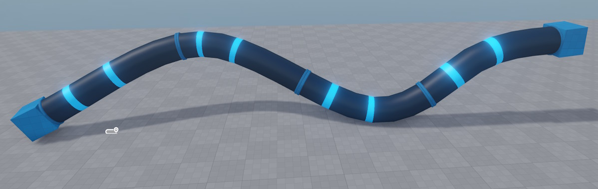

Spline Mesh Component
The spline mesh component generates a mesh that follows a spline. It tiles one or more mesh pieces along the spline, making it easy to create things like pipes, roads, fences, cables or rails without manually placing individual segments.

Setting up a Spline Mesh
- Add a spline component to a game object and configure the spline shape.
- Attach a spline mesh component to the same object.
- Set at least one Middle Part — this mesh is tiled along the spline.
- Optionally set a Start Part and/or End Part to cap the spline with specialized meshes (e.g. a pipe end-cap).
Distribution Modes
The Distribution Mode controls how many mesh pieces are placed and how they are scaled:
- Fit to Segment: Each middle part is stretched to fill exactly one spline segment (the span between two spline nodes). Use this when your mesh should align with the spline node positions.
- Scale Evenly (default): The number of tiles is derived from the total spline length and the mesh length. All tiles are scaled uniformly.
- Scale Evenly Per Segment: Like Scale Evenly, but computed independently for each spline segment. This keeps tiles aligned to segment boundaries.
When multiple middle parts are specified, either a random piece or the best-fitting piece is selected at each position, depending on the distribution mode and the relative lengths of the available parts.
Component Properties
- Start Part: Optional mesh placed at the beginning of the spline.
- Middle Parts: One or more meshes tiled along the spline body. Each entry has optional Padding Front / Padding Back values (can be negative to create overlaps).
- End Part: Optional mesh placed at the end of the spline.
- Distribution Mode: How tiles are counted and scaled (see above).
- Seed: Random seed used when picking among multiple middle parts. A negative value uses the owner object's stable random seed; zero or positive sets an explicit seed.
- Offset Y: Shifts the entire generated mesh sideways (along the spline's local Y axis).
- Offset Z: Shifts the entire generated mesh up/down (along the spline's local Z axis).
Collision
To add physics collision to a spline mesh, add a Jolt Generate Collision Component to the same game object. It reads the render meshes produced by the spline mesh component and generates a matching Jolt collision mesh on scene export.